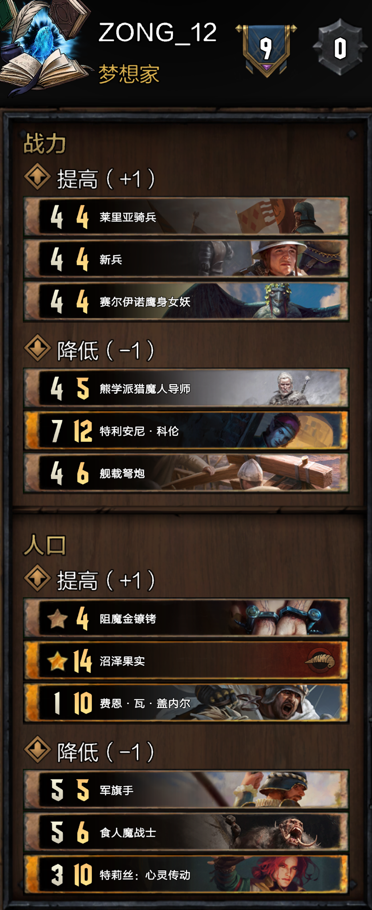
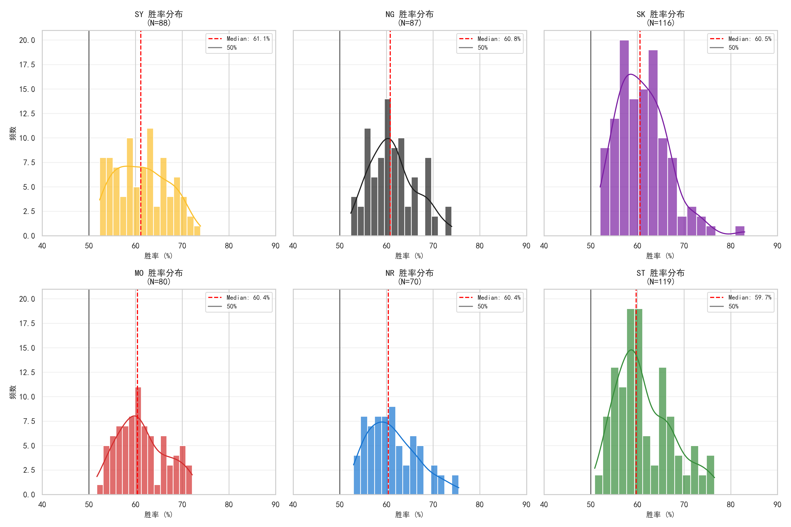
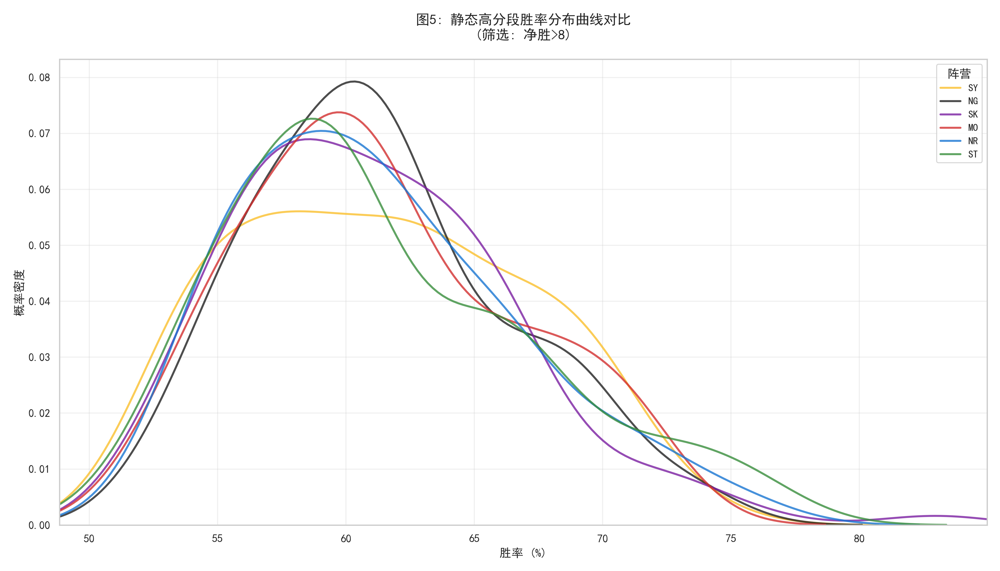
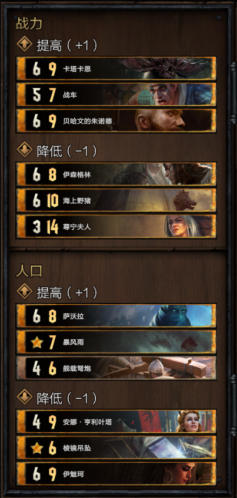

各位玩家大家好，我是Astorian。
欢迎大家观看2026年4月赛季巫师之昆特牌中国社区的平衡推荐。
首先汇报一下我们昆特平衡数据库这个月的工作成果。作为幕后工作者，这个月我们非常繁忙，团队全程负责对接并促成了软泥怪和Dauren、Kerpeten96以及IC独立联盟的合作，第一次成立了跨社区的国际平衡联盟。另外我们还建立了我们的官方博客用于发布文章、民意调查数据以及更多的功能模块，以后所有的文章、帖子都会发布在这里。
在本月的平衡推荐当中，CN社区一共有两位玩家发布了自己的平衡推荐，他们分别是Zong和软泥怪（Violet）。接下来我会分享他们的平衡推荐以及思路。

首先需要介绍的是Zong，这位玩家是从2025年11月开始进行平衡推荐的，起初支持率不高，但是目前是CN社区支持率最高平衡推荐主播。他的基本平衡思路是根据数据图表对各个阵营进行强度分析，再根据自身对于游戏环境的理解，针对本月环境中比较强的阵营的卡组进行针对性调整，并且加强部分的目的是加强弱势阵营并寻找出现新卡组的可能进行改动。
（以下为作者根据视频内容总结而成，如果有问题请看zong的原始视频）
2026年4月赛季环境数据统计表（作者：emmm）


由图可见，松鼠党和史凯利格两个阵营的游玩人数最多，同时胜率超过75%的人数相较于其他阵营也更多，所以史凯利格和松鼠党是本月的环境中比较强的两个阵营，可以适当削弱。
同时辛迪加也表现不俗，虽然在高胜率方面人数不多，但是在65%~75%之间的胜率人数是最多的，但是完全还没有到达需要削弱的程度。
接下来三个阵营，怪兽、帝国、北方这三个阵营就相对来说表现不佳，在这个月可以适当增强一下。
思路如下：
战力+1
三星 莱利亚骑兵：这张卡目前比较冷门，但是潜力不错，可以配合很多北方的指令卡获得不错的点数，比如使用袭击者斥候复制各种指令单位。如果这张卡不适用控制卡去处理，点数就会很大；但是如果使用控制卡处理，那么其他的关键指令卡就会比较安全（吸引火力）。并且4P也可以被传送门直接拉出来，在节奏上会更加舒服。
两星 新兵：首先帝国士兵卡组已经受到了不少的削弱，5点战力会让这张在场上更好的生存并触发指令效果。对于士兵帝国卡组而言，这张卡也是一个控制对局节奏的好卡，留在场上可以随时使用指令去卡组里换出自己想要使用的士兵卡来获得对局的主动权（比如先手上新兵，然后对面R1单出一个萨琪亚：指挥官，就可以打出一张日轮之师轻骑兵的同时使用新兵的指令从卡组中再拉出一张日轮之师轻骑兵来处理掉萨琪亚）。并且在呓语卡组中可以使用两个新兵连续打出来刷呓语单位的点数，也可以使用这张卡配合马格尼师、皇家御令对永夜之蚀进行速读的操作。
一星 赛尔伊诺鹰身女妖：我还是很怀念之前鹰身女妖的破烂怪的，而且目前破烂怪在这个月的环境中也并不强势，所以我打算加强这张卡让这种破烂怪再次重出江湖。并且这张卡也可以配合怪兽卡组中会师比较多的卡组（比如使用低阶女巫）。
战力-1
三星 熊学派猎魔人导师：我听说国外有一种养乌鸦的卡组，可以通过海之祭礼打出很多的伤害产生非常多的受伤单位，之后再打出这张卡产生很大的点数。主要国外社区玩这个卡组的非常多且强势，并且这个削弱对CN社区影响较小（CN社区玩的人很少）。
两星 特里安尼·科伦：这张当初从13人口调整到12人口，之后又担心过于强势，从8战力削弱到7战力。但是按照目前的环境来看，这张卡在环境中依旧很强势。这张卡目前在破烂自然馈赠（破烂小叶子共生）卡组中出现的比较多，同时在精灵/希鲁卡组中也经常出现，当然还有一些打出多个备用计划（4个备用计划）的卡组也会使用。减少一点战力可以让这张卡更容易被处理（类似于萨琪亚）。
一星 舰载弩炮：这张卡在之前的社区赛当中，很多国外的选手都会携带使用这张卡的卡组。这张卡的削弱也是在国际交流当中被其他社区支持的削弱，但是其他社区会觉得加人口很好，但是我觉得减战力会更加好好一点，因为会影响这张卡的存活率，而这张卡最需要的就是留在场上，而且也不会影响这张卡相关卡组的构筑，只是玩家需要更多的铺垫来保护这张卡不被对手处理掉。
人口+1
三星 阻魔金镣铐：这张卡自从来到4人口之后，已经影响环境很久了。首先是很多卡组可以用极低的代价携带控制卡助长了环境当中一些点数卡组也拥有了控制能力。因为一些金卡如果被一些昂贵的控制卡处理掉，那么这个资源交换是值得的；但是如果一个金卡被一张4人口的几乎没有任何代价的锁定给锁住住失去效果的话，那么这是失去平衡的。同时这张卡的价值已经远远超过了很多5P的同类型卡（比如阿尔祖落雷术）。虽然这项削弱会影响到群岛炼金（三复活炼金和传统炼金）的强度，无法使用海之新娘或者鸦母德鲁伊重复从墓地里打出。但是之前加强过龙龟和乌鸦之母，目前的炼金卡组强度很高，也是目前我们社区公认的比较轮椅的卡组，所以削弱也是合理的。在削弱之后也可以解放炼金对于其他炼金卡的利用，不会一直重复使用阻魔金镣铐。并且这个月我们也推荐了加强特莉丝·心灵传动，所以也是对下个月可能出现的一些很强的孽鬼卡组，尤其是孽鬼炼金的提前削弱。
两星 沼泽果实：加强领袖这个问题也是很经典的一个问题了。这次的加强主要目的是为了强加破烂怪，而且怪兽这个阵营已经弱了很久了，而且也不想投太多的削弱票。
一星 费恩·瓦·盖内尔：帝国的卫士卡，上个月国外已经削弱了怪兽和北方的卫士卡，所以这张卡的削弱也会很快到来，剩余的卫士卡也都会逐渐来到11人口。主要原因是我不想投削弱希姆莱斯·芬达贝的票，所以就选择这个吧。
人口-1
三星 军旗手：首先这张卡来到4P，那么携带他的代价就很小，而且这张卡可以制裁那些有很多绿字（增益）的卡组，比如小叶子（自然馈赠）。如果对手不是这种有很多绿字的卡组，那么可以使用骑士挑战者、卡西尔来弥补这一问题，可以多次回收骑士挑战者给对面增益的点数。所以这张卡还是很适合毒奶（陶森特式好客）卡组的。
两星 食人魔战士：继续之前的“两步走”计划，调整到5/5，这个对于食人魔卡组来说是一个不错的加强，让卡组构筑能多余出2人口来优化构筑。
一星 特莉丝·心灵传动：这张的加强也是CN社区玩家期待已久的。这张卡来到9人口可以滋生非常多的新的孽鬼卡组。比如孽鬼败德可以找芝麻开门、炼金可以找需要的炼金卡、松鼠党可以找丰收、洞察宝珠或者备用计划等等，也可以在法师北当中使用，总之使用场景非常丰富。
（以下为作者根据视频内容总结而成，如果有问题请看软泥怪的原始视频）

第二位是软泥怪（Violet），他是天梯当中的顶尖选手，多次获得中国社区社区赛的冠军，实力非常强。同时他也负责《每月36套卡组》视频的主要编辑工作。在本月他和Dauren、Kerpeten96以及IC独立联盟交流了意见，同时也和CN社区其他高分选手进行了充分的沟通，最后得出了一致的意见。以下是他的平衡思路。
战力+1
三星 卡塔卡恩：上个月我就有推荐了这张卡，但是可惜没有上榜。这张卡是对吸血鬼的一次补强，加到7战力之后，对手会更难处理这张卡，那么就会成为一个很好用的引擎，进一步提升本就出场率不高的吸血鬼卡组的出场率。
两星 战车：上个月对于围攻的加强我选择了加强攻城锤，但是似乎大家对此并不是太同意，认为5战力过于OP。那么这次我选择加强战车这张卡，加强到6战力对手会不好处理，配合自身的流血效果落地就可以有10点的点数，加强之后有更多进入构筑的机会。
一星 贝哈文的朱诺德：国外主播推荐的加强，加强一些群岛的冷门卡，用于补偿一些针对群岛卡组的削弱，7战力可以让这张卡的基础点数更高，有更大概率进入构筑。
战力-1
三星 伊森格林：精灵卡组在这个赛季非常强势，通过和Dauren以及Kerpeten96的沟通之后决定削弱这张卡。
两星 海上野猪：这张卡也是国外社区推荐的削弱卡。是一张针对铺场卡组的单卡。因为携带这张卡的水手和破烂群岛特别流行，强度也很高。所以决定削弱这张卡。
一星 尊宁夫人：辛迪加大奖卡组的核心卡之一，这张卡非常全面，集滤牌、检索、爆点、引擎与一体，在R1出来的时候对手非常难解决，而且点数很大，压制力极强。但是这张卡的争议还是很大的，因为在CN社区的游戏环境来看，辛迪加大奖卡组在环境中并不算强势，也很少有人玩，但是为了和其他人统一结果，所以暂且放在1星的位置表示不支持，不喜欢的可以选择不投。
人口+1
三星 萨沃拉：这张卡在中国社区特别火，主要是在辛迪加败德卡组当中使用，配合乞丐王可以获得一回合将近20点的爆点，并且还会在后续配合乞丐王继续获得收益。一开始有思考过削弱芝麻开门、乞丐王以及黑市买卖（领袖）来削弱败德，但是削弱芝麻开门可能会导致败德卡组直接消失，削弱其他两个支持率也不高，所以最后选择了削弱这张卡来削弱败德卡组。
两星 暴风雨：国外的推荐削弱卡，针对国外的环境中的自然馈赠卡组。在其他社区自然馈赠卡组的强度已经达到了T1的级别，削弱这张卡会在一定程度上削弱自然馈赠卡组的强度。
一星 舰载弩炮：理由同上，但是选择削弱人口来限制相关卡组的强度。
人口-1
三星 安娜·亨利叶塔：针对同化卡组的加强，店店帝国也会携带这张卡。当时讨论了加战力和减人口两种方案，但是5战力可能会非常强，所以最后决定加强人口。调整到8人口，使用约翰·卡尔维特之后也可能不会在下一回合第一时间抽上手，这样会进一步限制这张的强度，不会导致过度加强。
两星 棱镜吊坠：这是一个针对法松的加强，当然也适合其他需要携带蛙群繁殖季的卡组。人口调整到5可让这张卡加入更多适合的卡组当中而不需要花费过多的代价，可以让这张冷门卡有更多出场的机会。我期待着各位玩家对这张卡的开发。
一星 伊魅柯：这张卡在之前已经加强过一次了，但是我觉得还需要继续加强。这张卡在目前依旧算是冷门卡，这次加强到8人口，本事落地6点加上2金币的收益，同时还是一个可以持续获得收益的引擎，那么在点数上也算是不亏的，如果可以在长局中使用会获得不错的收益。希望在加强之后有一些辛迪加大奖、宝箱卡组会携带这张卡。
以上就是2026年4月赛季中国社区的所有平衡推荐了，我们下个月游戏里再见。祝大家游戏愉快！
Astorian
2026年4月